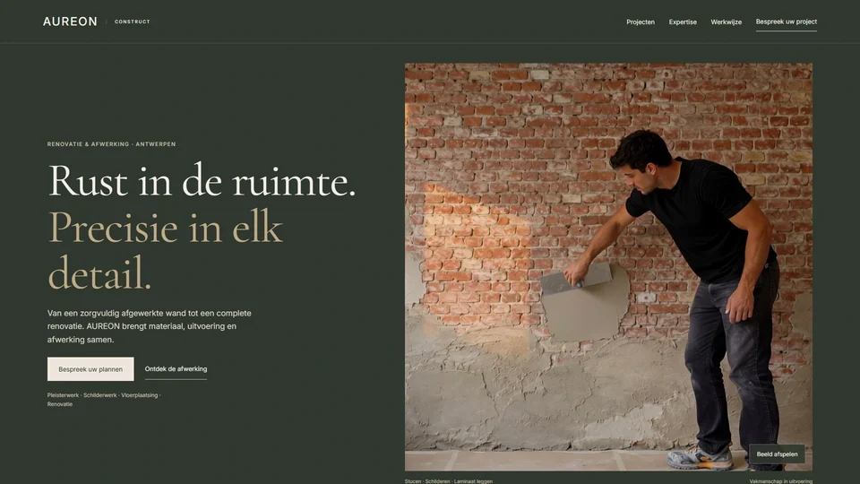
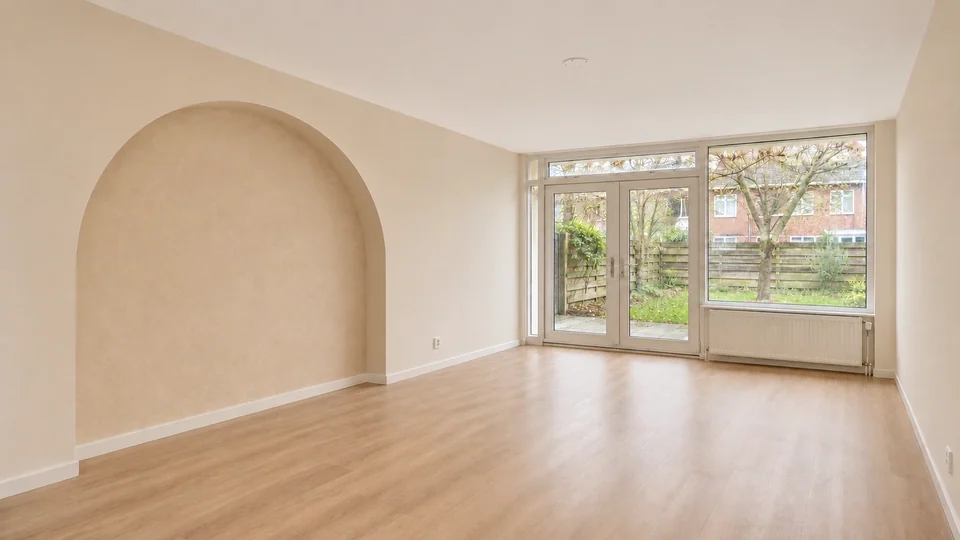
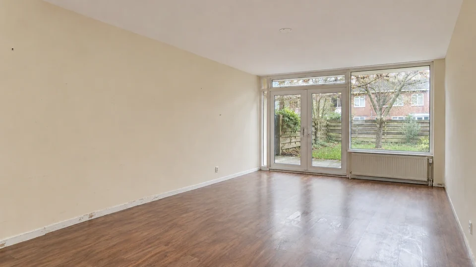
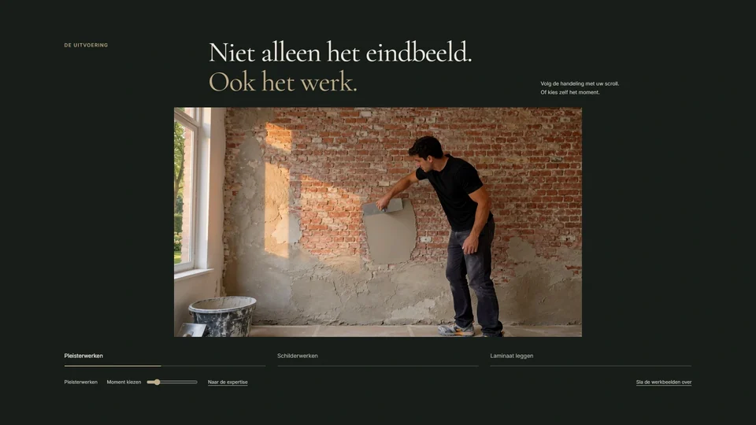
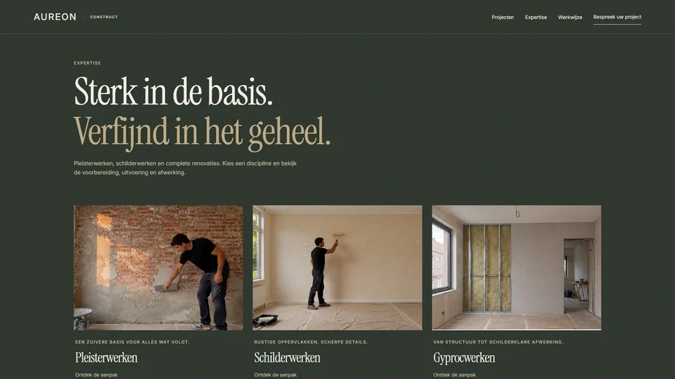
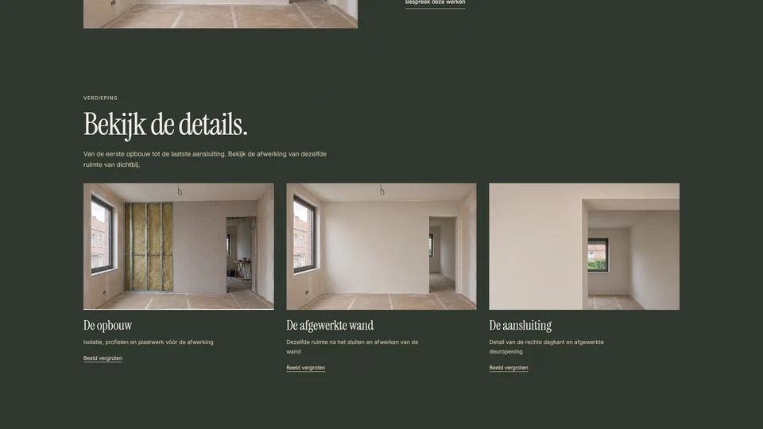
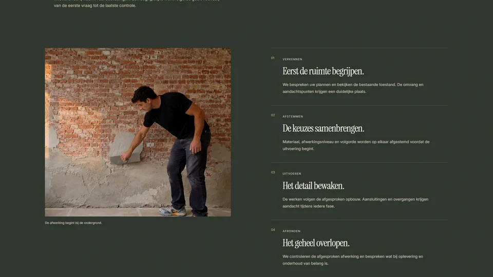
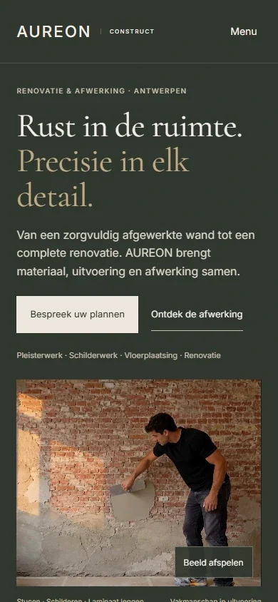
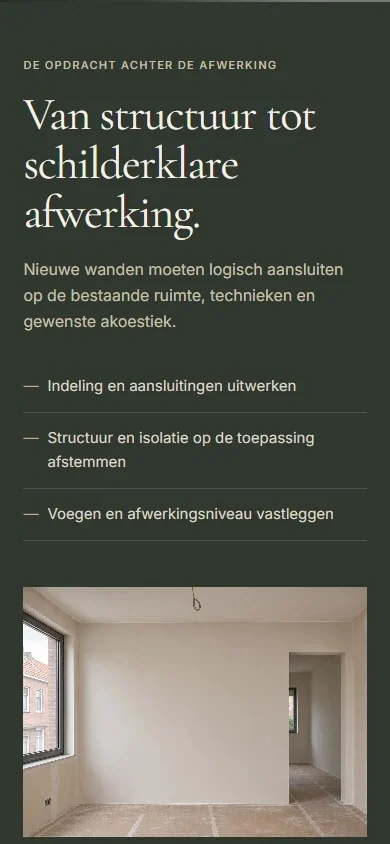

Elarae Studio / 06 · Renovatie & afwerking / Case study
Aureon ConstructVakmanschap, vertaald naar een digitale ervaring.
Een digitale merkbeleving voor renovatie en verfijnde afwerking.
Voor Aureon Construct komen vakmanschap, architectuur en een heldere gebruikerservaring samen. Website en film vertellen één verhaal, met aandacht voor materiaal, beweging en detail.
Eén verhaal, in beeld en beweging.
De film volgt dezelfde aandacht als de website: van de eerste indruk tot de afwerking van de ruimte. De transformatie, projectbeelden en bediening laten zien hoe het geheel samenkomt.
Website Design · UX/UI · Development · Motion Design
Rust als eerste indruk. Richting als volgende stap.
Diep olijfgroen, royale beelden en een compacte typografische hiërarchie geven het merk een eigen positie. De opening verbindt de belofte aan zichtbaar werk. Twee duidelijke routes laten bezoekers een project bespreken of eerst de expertise verkennen.

Een herkenbare signatuur
Het olijfgroene palet en warme bronstinten keren terug in navigatie, labels en bediening. Ze verbinden de pagina’s zonder de projectbeelden te overheersen.
Typografie met een taak
Cormorant Garamond geeft de grote titels een architecturaal ritme. Inter houdt beschrijvingen, navigatie en acties helder leesbaar.
Beweging met betekenis
De hero toont de handeling. De volgende sectie laat de bezoeker het werk zelf verkennen via scrollpositie en een toegankelijke bediening.
De verandering wordt begrijpelijk.
Een vergelijking werkt pas als beide beelden dezelfde ruimte en camerahoek delen. De schuifregelaar onthult de afwerking op dezelfde plek: van een kale wand naar een zachte boog. De bezoeker bepaalt zelf het tempo en de uitsnede.


VoorNa
Zelf de verandering ontdekken
Een directe handeling maakt het verschil zichtbaar. Geen automatische wissel die verdwijnt voordat de bezoeker klaar is met kijken.
Controle over beweging
De werksectie combineert een beeldsequentie met hoofdstukken en een schuifregelaar. Bezoekers kunnen ook zonder uitgebreid scrollen naar een handeling gaan.
Beeld en uitleg samen
De vergelijking staat naast een toelichting op de afwerking. Zo krijgt het resultaat betekenis binnen de dienst, in plaats van als losse sfeerfoto te functioneren.
Van overzicht naar een gericht gesprek.
Zeven disciplines delen één paginaopbouw. Een bezoeker herkent daardoor telkens waar de uitleg, het werk, de beelden en de vervolgstap staan. Het overzicht maakt verkennen eenvoudig; de detailpagina biedt de verdieping die nodig is om een project te bespreken.





Herkenbare informatie
Dezelfde volgorde verlaagt de inspanning bij het vergelijken van diensten. Scope en werkwijze blijven dichtbij het beeld.
Verdieping zonder verdwalen
De galerij opent een groter beeld binnen dezelfde context. Sluiten brengt de bezoeker terug bij het detail dat hij bekeek.
Een gerichte vervolgstap
De projectaanvraag vraagt naar de relevante uitgangspunten. In de ontwikkelomgeving wordt die invoer lokaal verwerkt; er wordt geen aanvraag verzonden.
Dezelfde rust, binnen handbereik.
Op mobiel volgen tekst, werkbeeld en actie een verticale route. Het menu blijft compact en de diensten zijn herkenbaar opgebouwd. De vergelijking blijft met een vinger te bedienen; beelden behouden hun eigen verhouding.




Elk onderdeel draagt dezelfde intentie.
- Architecturale digitale merkidentiteit
- Scrollgestuurde werksequenties
- Interactieve vóór/na-vergelijking
- Consistente paginaopbouw voor zeven diensten
- Beeldgalerij met vergroting
- Responsive ontwerp voor desktop en mobiel
- Duidelijke route naar een projectaanvraag
- Gebundelde lettertypen en centrale contactconfiguratie
De verfijning zit ook in de uitvoering.
Semantische pagina’s, compacte beeldformaten en gerichte interacties dragen de ervaring. Contactgegevens komen uit één configuratie. Zelf gehoste lettertypen houden de merkuitstraling beschikbaar zonder een externe fontdienst.
Strategie
- Merkpositionering en informatiearchitectuur
- Route van oriëntatie naar projectgesprek
- Inhoudsstructuur voor diensten en werkwijze
Design & motion
- Art direction en responsive UX/UI
- Scrollfilm en interactieve vergelijking
- Typografie, kleur en beeldregie
Development
- HTML, CSS en JavaScript
- Canvas-beeldsequenties en native bediening
- Lokale formulierlogica en configuratie
09 / Eindresultaat
Vakmanschap in beeld.
Vertrouwen in de route.
Aureon Construct brengt uitstraling en uitleg samen in één herkenbare ervaring. Bewegend werkbeeld toont de uitvoering. Diensten geven structuur. De vergelijking maakt de verandering zichtbaar.
Zo vertaalt Elarae Studio een positionering naar een website waarin bezoekers expertise kunnen verkennen en hun volgende stap begrijpen.
Bespreek jouw projectZelfstandig portfolio-concept, ontwikkeld als verkenning van merkbeleving, interactie en digitale dienstverlening. Projectbeelden zijn visualisaties; aanvragen worden lokaal verwerkt. Er zijn geen klantresultaten gemeten.